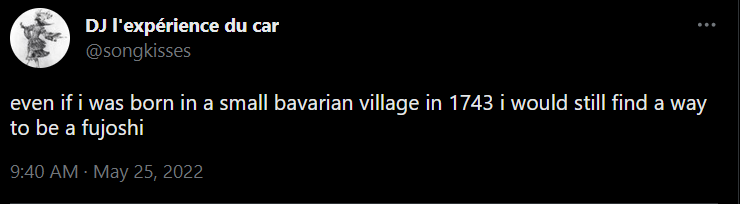

Site Updates
March 29, 2023
i’m still thinking on potential blog layout ideas (at some point, i want each blog post to be its own page so i can link to specific blog posts), but the site is actually coming together much quicker than i thought it would.
anyways i joined the fujofans weblisting i saw on soulbyte’s home page and i’m so glad i know it exists now. my twitter dn has been yu yu hafujo for like a year and i was worried i wasn’t properly conveying my feminist values here.
{kind=link}
i added some new sites to the cool sites section & some more resources in the web dev section. i know i should actually be working on my commissions page and whatnot, but it’s just more fun to click around random websites. sorry. i also keep forgetting to leave comments or follow the people i list, which is a bit embarrassing. will remedy this eventually.
i also got myself into a bit of a pickle. neocities drag-and-drop functionality is a bit…let’s say unreliable. so at some point i got fed up and just put all my media files in dropbox and linked that way. this is not ideal for like, a lot of reasons, so i’ll slowly backtrack and host all the files via neocities.
i also still need to clean up some of my older tumblr themes (i actually wince looking at the code now) and put them on my code page. right now only 2 are there. so sad!
oh, i also put the site up on github. i’ll try to keep the code up to date. anyways feel free to poke around. i’m a big copyright hater so go nuts with copy/pasting, just please no hotlinking, and if you use anything i didn’t write/make, please be mindful of attribution. the code is still pretty messy, but ah well. transparency and whatnot.
i think those are all the site updates i have for now. tbh i’m just procrastinating stuff and wanted an excuse to post the bavarian village fujoshi tweet but anyways have a good day. remember to drink water and whatnot.
EDIT: added some more personality quiz results too…